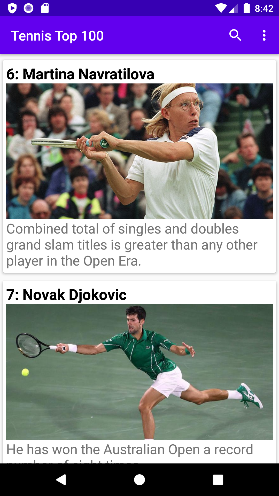
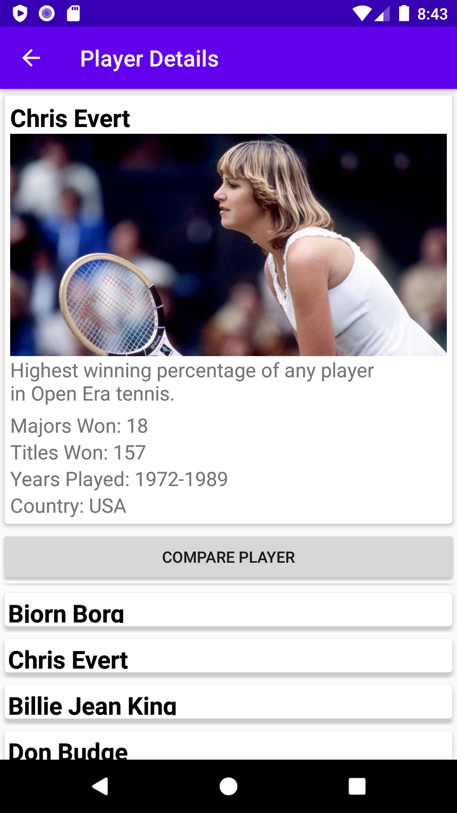

Tennis Top 100
Use the Tennis Top 100 app today.
Runs flawlessly on the latest versions of Android!
You'll be able to view and analyze the statistics on the majors and titles won by the greatest 100 tennis players in history.
In the app you'll also be able to compare the statistics between the players, within the app.

The easy to use interface allows for player comparisons by clicking the compare button, then selecting a player.
If you then want to compare that same player to a different player you can then click the compare button again and you'll be able to choose another player to compare with.
Additionally, the app features toggles to allow for the players to not only be sorted by the all-time overall rankings, but also by how many majors or titles they have won.
This is easily done by clicking on the majors or titles button in the action menu (pulled up by clicking the three little dots at the top of the main page).